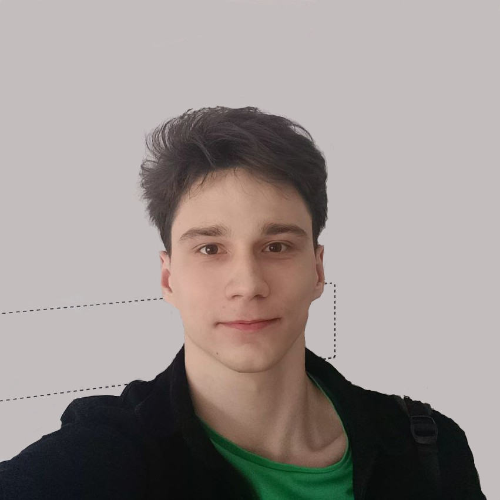

Обо мне
Мой опыт и подход к преподаванию

Жарких Никита Игоревич
Преподаватель по математике со стажем более года, специализирующейся на подготовке к ЕГЭ по профильной математике.
Образование
- Обучаюсь и являюсь отличником на направлении «Прикладная математика и информатика» на бюджетной основе в ТГУ им. Г.Р. Державина, который входит в топ 100 университетов по России
- Прошел курсы и практикумы повышения квалификации для репетиторов в академии "ПРОРЫВ"
Результаты моих учеников
- Средний балл моих учеников за ЕГЭ по профилю – 85 против общероссийского показателя в 62 балла. Лучший же ученик набрал 92 балла
- Большинство учеников за ОГЭ и ЕГЭ по базовой математике получают оценку "отлично"
- Мои ученики поступают в такие университеты, как МГСУ, ВГУ, ТГУ, МГТУ им. Н. Э. Баумана
2
года опыта
95%
успешной сдачи экзаменов
9 999
часов проведенных за математикой